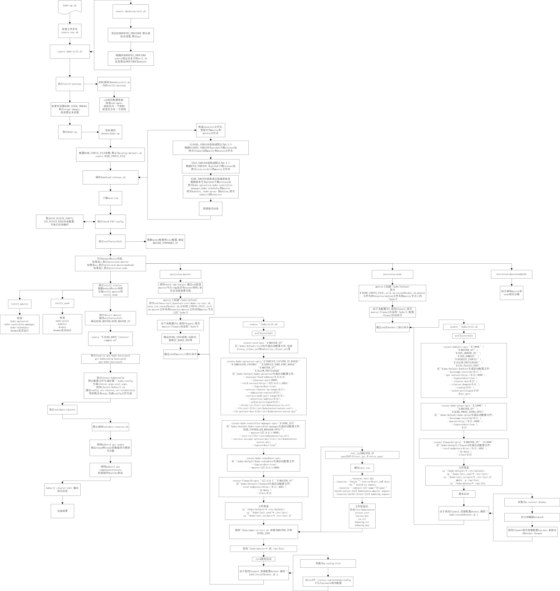

kube-up.sh kubernetes多节点部署方式分析
kube-up.sh kubernetes多节点部署方式分析
标签： kube-up kubernetes k8s 部署
kubernetes 项目内带有的 kube-up, 可以很方便的完成 kubernetes 的部署操作. 在此, 以 ubuntu 部署为例,进行一下 kube-up 流程的分析.
在kube-up.sh调用前,主要的环境变量设置需求是
export nodes="root@192.168.4.218 root@192.168.4.217"
export role="ai i"
export NUM_NODES=${NUM_NODES:-2}
在此处确定了集群主机,执行相关命令的用户,主机的角色,集群规模,在后续的部署中,会根据此定义,对主机进行相应的部署操作.
export KUBERNETES_PROVIDER=ubuntu
在此处确定了使用何种 PROVIDER. 此处由于进行的是针对 ubuntu 主机的集群组建,因此设置为 ubuntu. 本身 kube-up 支持多种 PROVIDER 的集群配置,例如 aws, gce, azure, openstack, centos 等等. 各 PROVIDER 的具体入口都在相应目录下 util.sh 中的 kube-up 函数.
由于此部署全部通过 ssh, scp 等完成针对主机的文件拷贝和命令执行, 因此, 在执行 kube.sh 的主机上,需要完成 ssk key 的配置, 从此执行主机上可以无密码 ssh 登录到任一集群主机.
在 kube-up.sh 脚本开始, 通过引入 kube-util.sh, 根据 KUBERNETES_PROVIDER 的值, 引入相应文件夹下的 util.sh.此处引入的是ubuntu下的util.sh.
调用verify-prereqs, 由于上一步做了引入, 实际执行的是 ubuntu/util.sh内的verify-prereqs.在其中检查了ssh-agent相关配置,需要至少引入一组密钥.
执行kube-up函数,实际调用的是ubuntu/util.sh内的kube-up函数.
在kube-up内,首先会去下载组件,准备相应的二进制文件,配置文件等.根据ETCD_VERSION,FLANNEL_VERSION,KUBE_VERSION,分别去github各项目下载对应的release包,将其中的二进制文件,分别放置在master文件夹和minion文件夹内,分别为master节点和worker节点准备.
接着,根据配置的nodes和对应的role,对每台主机依次执行相应操作.
role设置为a的主机,执行provision-master.主要操作是将相关文件拷贝到主机上,包括二进制文件,系统启动脚本和配置文件,配置脚本等.通过ssh,在主机上执行命令,完成组件启动配置文件的生成.同时,在master节点上,需要通过make-ca-cert.sh脚本,生成若干cert和key文件,用于运行时的认证服务.另外,会根据网络的使用情况,进行docker的配置和服务重启.
role设置为i的主机,执行provision-node.主要操作类似,将相关文件拷贝到主机上,包括二进制文件,服务启动脚本和配置文件,配置脚本蹬.通过ssh,在主机上执行相关命令,完成组件启动配置文件的生成.启动服务.一样会根据网络配置,修改docker的配置,重启docker daemon.
role为ai的主机,同时执行了a和i相关的操作.
各节点部署完毕后,会执行verify-cluster,同样会使用nodes和role,根据各个role,在节点上去分别检查master和worker部署情况.其中检查都是通过检验相应需要的daemon是否在运行,判断部署是否正确.
完成检查后,通过引入common.sh,调用load-or-gen-kube-basicauth,完成k8s环境的相应认证的配置和生成.
通过执行create-kubeconfig,在~/.kube/config内生成当前集群的配置信息.包括集群api-server入口位置,相应context,用户相关等.
至此, kube-up 函数调用完成,后续调用回到kube-up.sh内.
执行validate-cluster. 默认调用validata-cluster.sh, 通过kubectl get nodes, 确定节点启动和准备好的数量符合需求,通过 kubectl get componentstatuses ,确 master 各组件健康状态正常.
最终通过 kubectl cluster-info 输出集群信息,完成部署.
